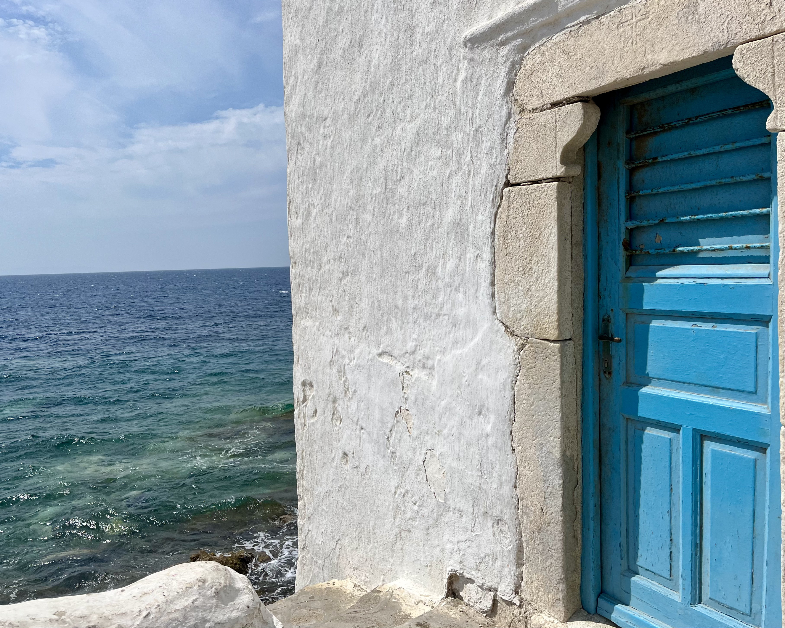
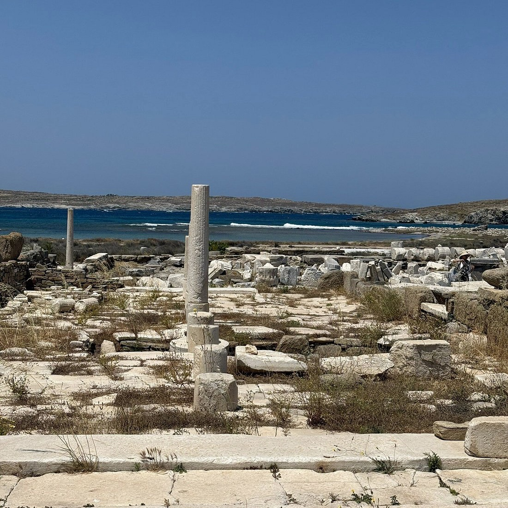
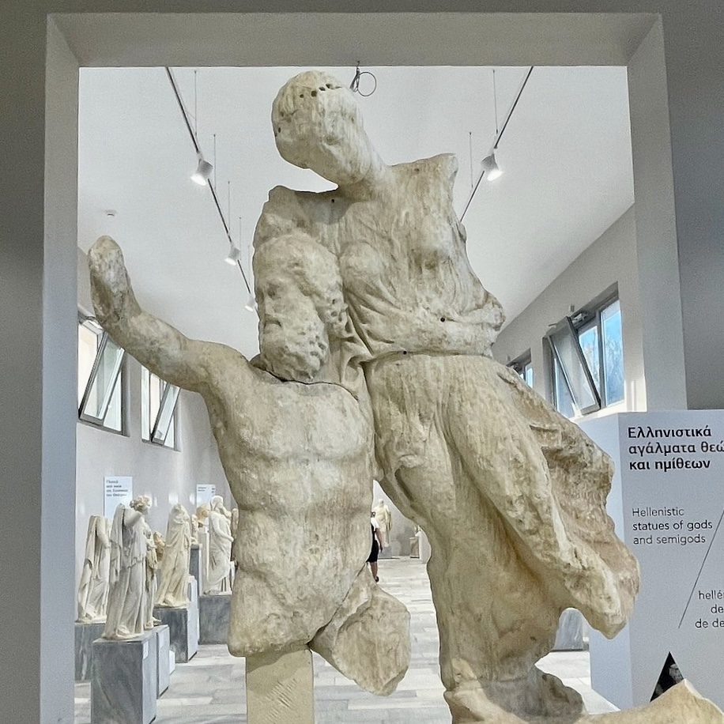
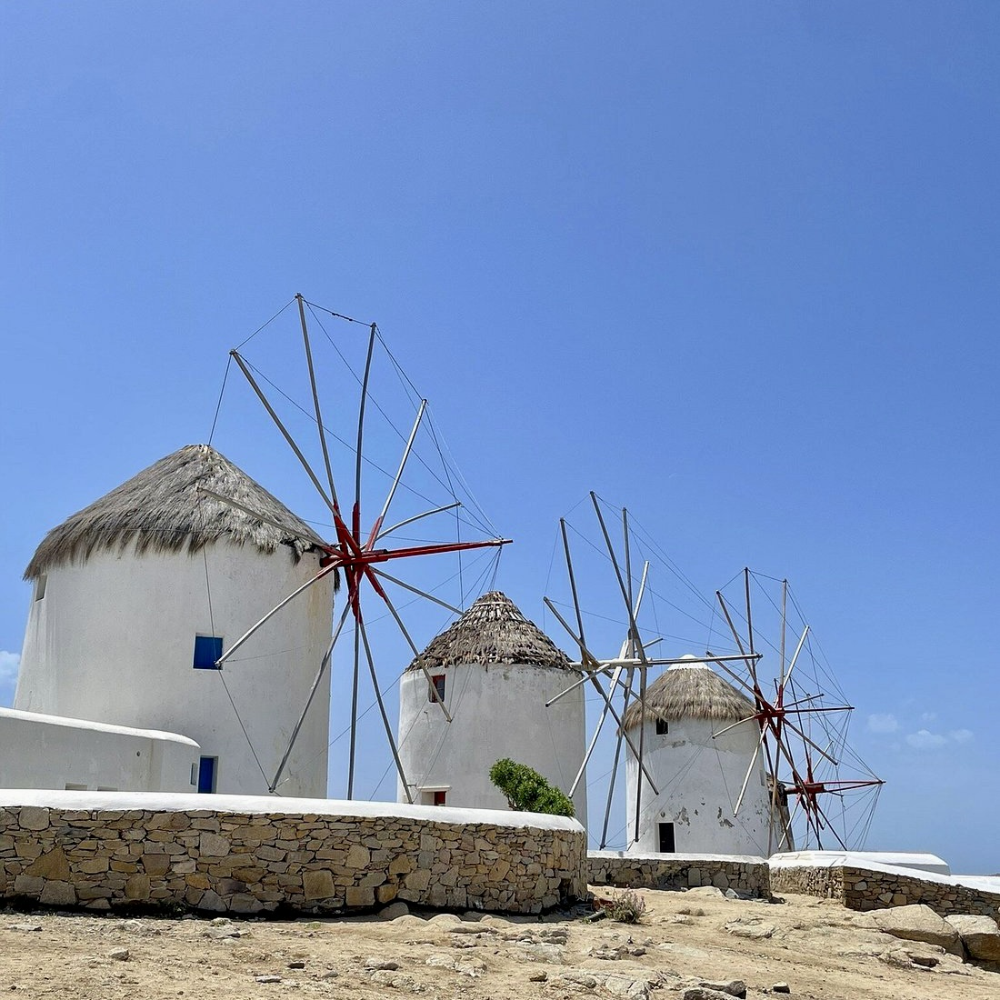

The Strategic Island: Pirates, Power, and the Aegean Trade Routes.

3-4 hours
Private Tour
Custom pickup point




Begin your day with a boat trip to Delos, a small uninhabited island just a short distance southwest of Mykonos. Delos is one of the most important archaeological sites in Greece, once considered the sacred birthplace of Apollo and Artemis. The island was a major religious and commercial center in antiquity, filled with temples, marketplaces, and grand houses with mosaic floors. After arriving by boat, explore highlights such as the Terrace of the Lions, the Temple of Isis, the House of Dionysus, and the ancient theatre. The walkable site also offers panoramic views over the Aegean, with well-preserved ruins that reveal the scale and sophistication of this once-thriving city.
Return to Mykonos by early afternoon and make your way to Chora, the main town on the island, known for its maze-like layout, traditional Cycladic architecture, and vibrant harbor. Begin your visit near the Old Port, where fishing boats bob alongside sleek yachts. From here, stroll into the narrow alleyways of the town center, where whitewashed houses are decorated with colorful shutters and overflowing bougainvillea.
Walk along Matoyianni Street, the main shopping lane filled with designer boutiques, jewelry stores, and art galleries. As you explore the side streets, you'll find hidden chapels, open squares, and small cafés. Continue toward the famous windmills overlooking the town and take in views of the sea and nearby Little Venice, a district where buildings are built right on the water’s edge with balconies hanging over the waves. This is a perfect spot to pause and enjoy a drink by the sea.
As the day winds down, consider visiting the Church of Panagia Paraportiani, one of the most photographed landmarks on the island. Its asymmetrical design and bright white walls reflect the light beautifully at sunset. Nearby, you’ll find tavernas and restaurants offering traditional Mykonian dishes and fresh seafood.
This itinerary blends ancient history with island charm, offering a full view of Mykonos' cultural and natural beauty in a single day. Delos adds depth to the experience with its archaeological significance, while Chora captures the island’s lively character and timeless style.
Begin your day with a boat trip to Delos, exploring its archaeological treasures like the Terrace of the Lions and the Temple of Isis.
Return to Mykonos and explore Chora, the island’s main town, with its maze-like streets and vibrant harbor.
Stroll along this bustling shopping lane filled with designer boutiques, jewelry stores, and art galleries.
Visit the iconic windmills overlooking the town and enjoy views of the sea and Little Venice.
Relax in this picturesque district where buildings are built right on the water’s edge, perfect for a drink by the sea.
End your day at this iconic church, one of the most photographed landmarks on the island, especially at sunset.
Entrance fees to venues
Private licensed guide
If you have any questions or would like to book this tour, feel free to reach out:
Email: elisavetmakri@hotmail.com
Phone: +30 69429190805